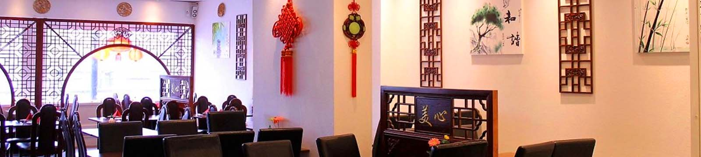
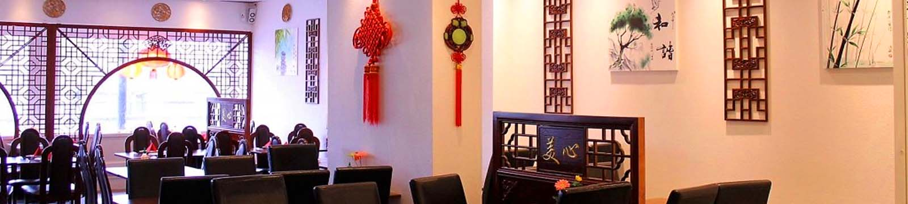
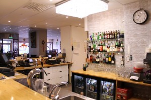
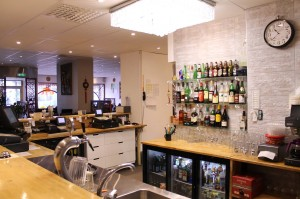

Ditt kök för kina- och thaimat i Mölndal
Om oss
Välkommen till våra nyrenoverade lokaler! Våra genuina recept kommer från olika lokala regioner och lagas med bra, färska råvaror av våra erfarna kockar. Vi har en stor och trevlig bar och i restaurangen har vi plats för både stora och små sällskap.
 

Meny
Takeaway
Lunchbuffé, a la carte och drycker
Beställning och avhämtning
Meny TakeawayHitta hit
Rasa Sayang ligger på Göteborgsvägen, ett stenkast från Mölndals Centrum, nedanför Mölndals bro. Närmaste spårvagnshållplats är Mölndals Innerstad, linje 2 och 4.
Öppetider
söndag - torsdag: 11-21
fredag - lördag: 11-22
helgdagar: 11-21